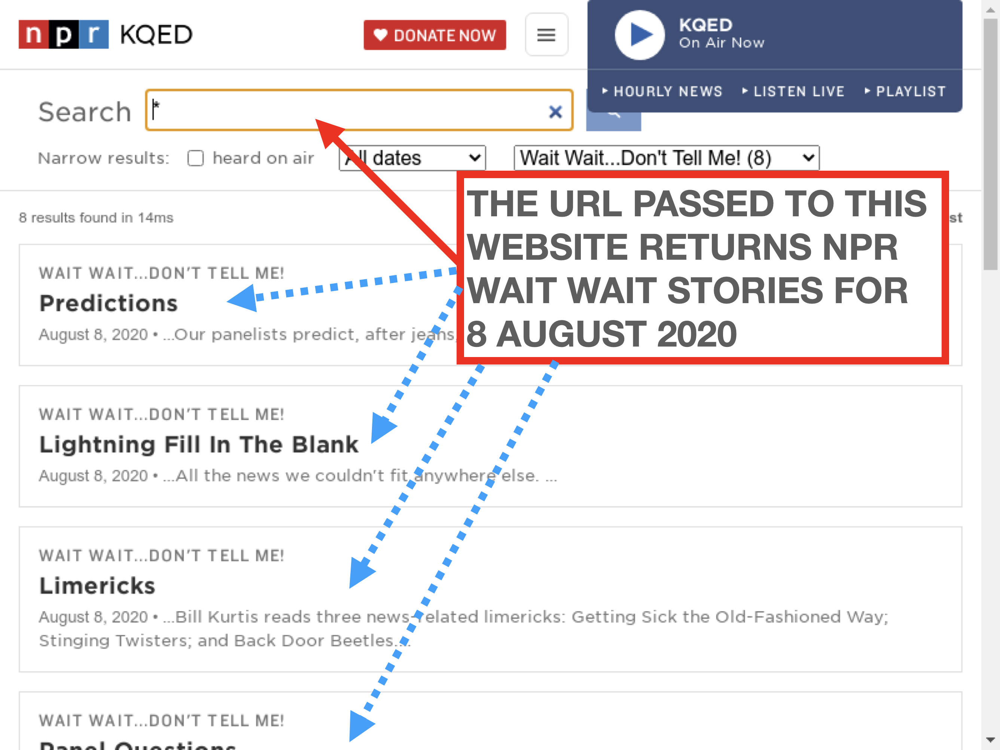
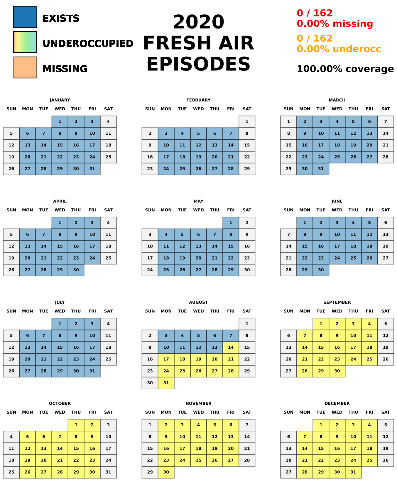

6. Core APIs
This document describes the nprstuff core API, which provides the low-level back-end for the CLI front ends described in Core Functionality and New Functionality. These modules live under nprstuff.core.
The most fundamental change, from the older NPR API, is the usage of webscraping (through Selenium) and inference to craft responses that return stories for NPR Fresh Air and NPR Wait Wait episodes. Here is a screenshot.
{kind=link}
To get NPR Wait Wait episodes for 8 AUGUST 2020, one needs to put this URL into address bar of the Selenium headless browser,
https://www.npr.org/search?query=*&page=1&refinementList[shows]=Wait Wait...Don't Tell Me!&range[lastModifiedDate][min]=1596783600&range[lastModifiedDate][max]=1596870000&sortType=byDateAsc
This unwieldy process required a fair amount of trial and error to (mostly) work.
Second, I have redesigned the Python logging functionality in the following way,
custom format of the logging output, formatted as
'%(levelname)s %(module)s.%(funcName)s (%(lineno)d): %(message)s'. See the logging cookbook for more information on what this format means.the Core Functionality command line tools have an extra argument flag,
--level, that specifies whether to print out logging output and the following debug levels:DEBUG,INFO, orERROR.
6.1. npr_utils module
This module contains common utilities to get the proper metadata for NPR programs, to name these media files in the proper date format, and to get the full paths to the LibAV or FFMPEG and HandBrakeCLI tools used to create the NPR programs in M4A and MP3 formats (among other functionalities).
- class nprstuff.core.npr_utils.MyPool(processes=None, initializer=None, initargs=(), maxtasksperchild=None, context=None)
A magic type of
Poolwhose processes can spawn other processes. This allows one to create a pool of workers that can spawn other processes (by default,multiprocessingdoes not allow this).I copied the code from this website and a new website, without any real understanding EXCEPT that I am extending a
Pool.
- nprstuff.core.npr_utils.find_necessary_executables()
- nprstuff.core.npr_utils.get_NPR_URL(date_s, program_id, NPR_API_key)
get the NPR API tag for a specific NPR program.
- Parameters
- Returns
a
strof the exploded URL for REST API calls to the NPR API server.- Return type
Note
no methods call this function any more, instead using the
requestsmodule’s cleaner, higher-level functionality of REST API commands.
- nprstuff.core.npr_utils.get_api_key()
- Returns
the NPR API key, stored in
~/.config/nprstuff/nprstuff.conf, under theNPR_DATAsection andapikeykey.- Return type
See also
- nprstuff.core.npr_utils.get_chrome_driver()
-
See also
- nprstuff.core.npr_utils.get_datestring(date_act)
- Parameters
date_act (datetime) – the candidate
datetimeto format.- Returns
a
str, with the format like “January 1, 2014”, of thisdatetime.- Return type
See also
- nprstuff.core.npr_utils.get_decdate(date_s)
- nprstuff.core.npr_utils.get_firefox_driver()
-
See also
- nprstuff.core.npr_utils.get_freshair_downloaddir()
- Returns
the NPR Fresh Air default download directory, stored in
~/.config/nprstuff/nprstuff.conf, under theNPR_DATAsection andfreshair_downloaddirkey.- Return type
See also
- nprstuff.core.npr_utils.get_order_number_saturday_in_year(date_act)
Returns the 1-indexed order of the Saturday associated with a given
date. NOTE: this object MUST be a Saturday.
- nprstuff.core.npr_utils.get_order_number_weekday_in_year(date_act)
Returns the 1-indexed order of the weekday associated with a given
date. NOTE: this object MUST be a weekday.
- nprstuff.core.npr_utils.get_saturday_times_in_year(year, getAll=True)
Returns a sorted
listof Saturdays, asdateobjects for a given year, either all the Saturdays or all the Saturdays before now.- Parameters
- Returns
- Return type
See also
- nprstuff.core.npr_utils.get_time_from_datestring(datestring)
- nprstuff.core.npr_utils.get_waitwait_downloaddir()
- Returns
the NPR Fresh Air default download directory, stored in
~/.config/nprstuff/nprstuff.conf, under theNPR_DATAsection andwaitwait_downloaddirkey.- Return type
See also
- nprstuff.core.npr_utils.get_weekday_times_in_year(year, getAll=True)
Returns a sorted
listof weekdays, asdateobjects for a given year, either all the weekdays or all the weekdays before now.- Parameters
- Returns
- Return type
See also
- nprstuff.core.npr_utils.is_saturday(date_act)
- nprstuff.core.npr_utils.is_sunday(dtime)
- nprstuff.core.npr_utils.is_weekday(date_act)
- nprstuff.core.npr_utils.saturdays_of_month_of_year(year, month)
- Parameters
- Returns
a sorted
listof days in a calendar month that are Saturdays, each of which ranges from first (1) to last day of month. Each day is an integer \(\ge 1\).- Return type
See also
- nprstuff.core.npr_utils.store_api_key(npr_API_key)
Stores a candidate NPR API key into the configuration file,
~/.config/nprstuff/nprstuff.conf, into theNPR_DATAsection andapikeykey.- Parameters
npr_API_key (str) – candidate NPR API key.
See also
- nprstuff.core.npr_utils.store_freshair_downloaddir(freshair_downloaddir)
Stores the default location of the NPR Fresh Air episodes into the configuration file,
~/.config/nprstuff/nprstuff.com, into theNPR_DATAsection andfreshair_downloaddirkey.- Parameters
freshair_downloaddir (str) – the default directory to download NPR Fresh Air episodes.
See also
- nprstuff.core.npr_utils.store_waitwait_downloaddir(waitwait_downloaddir)
Stores the default location of the NPR Fresh Air episodes into the configuration file,
~/.config/nprstuff/nprstuff.com, into theNPR_DATAsection andwaitwait_downloaddirkey.- Parameters
waitwait_downloaddir (str) – the default directory to download NPR Fresh Air episodes.
See also
6.2. convert_image_youtube module
This module provides (for now) the low-level functionality to use the CloudConvert API to convert PDF, PNG, and SVG images into a final PNG image, and to create animated GIF files from YouTube clips.
This module also requires QSvgRenderer and QByteArray for some of its functionality. However, PyPI does not have Python bindings to QtSVG. To install on an Ubuntu machine, you can thoughts and prayers these instructions
sudo apt install python3-pyqt5.qtsvg
There may be similar installation instructions on other Linux, Windows and Mac OS X machines.
- nprstuff.core.convert_image_youtube.get_cloudconvert_api_key()
- Returns
the CloudConvert API key, stored in
~/.config/nprstuff/nprstuff.conf, under theCLOUDCONVERT_DATAsection andapikeykey.
- nprstuff.core.convert_image_youtube.get_youtube_file(youtube_URL, output_file, quality='highest', verify=True)
Uses yt-dlp programmatically to download into an MP4 or MKV file.
- nprstuff.core.convert_image_youtube.pdf2png(input_pdf_file, newWidth=None, verify=True)
Returns an
Imageobject of the PNG file produced when the CloudConvert server uploaded an input PDF image file. The output PNG file has the same aspect ratio as the input file.- Parameters
- Returns
- nprstuff.core.convert_image_youtube.png2png(input_png_file, newWidth=None, verify=True)
Returns an
Imageobject of the PNG file produced when the CloudConvert server uploaded an input PNG file. The output PNG file has the same aspect ratio as the input file.- Parameters
- Returns
- nprstuff.core.convert_image_youtube.svg2png(input_svg_file, newWidth=None, verify=True)
Returns an
Imageobject of the PNG file produced when the CloudConvert server uploaded an input SVG(Z) file. The PNG file has the same aspect ratio as the input file. UsesQSvgRendererto convert an SVG(Z) into a PNG.
- nprstuff.core.convert_image_youtube.youtube2gif(input_youtube_URL, gif_file, quality='highest', duration=None, scale=1.0, verify=True)
Converts a YouTube clip into an animated GIF file. First, downloads the YouTube clip into an intermediate MP4 file; then converts the intermediate MP4 file into the animated GIF, and deletes the intermediate file.
- Parameters
input_youtube_URL (str) – the input valid YouTube clip’s URL.
quality (str) – optional argument for the quality of the YouTube clip. Default is “highest”.
duration (float) – duration, in seconds, of input clip to use to make the animated GIF. If
Noneis provided, use the full movie. If provided, then must be \(\ge 1\) seconds.scale (float) – scaling of input width and height of MP4 file. Default is 1.0. Must be \(\ge 0\).
verify (bool) – if
False, then do not verify the SSL connection to YouTube. Default isTrue.
See also
mp4togif.
6.3. music_to_m4a module
This module provides low-level functionality that converts other music formats (MP3, OGG, and FLAC) into M4A. It also contains functionality to fix M4A metadata.
- nprstuff.core.music_to_m4a.get_defaultname(m4afilename, showalbum=False)
Returns a candidate default file name for an M4A file, given its metadata.
- Parameters
- Returns
the candidate file name for the M4A file. If
showalbumisTrue, name is<artist>.<album>.<song>.m4a. IfFalse, name is<artist>.<song>.m4a.- Return type
- nprstuff.core.music_to_m4a.music_to_m4a(filename, tottracks=None, album_path=None, outfile=None, verbose=True, toUpper=True)
Converts a non M4A file (MP3, OGG, or FLAC) into an M4A file.
- Parameters
filename (str) – the input filename.
tottracks (int) – optional argument, the total number of tracks for the song in its album. If
None, then the total number of tracks won’t explicitly be defined. Must be \(\ge 1\).album_path (str) – optional argument, the file path to the album cover (must be a PNG or JPEG file). If
None, then no album cover will be added to the M4A song’s metadata.outfile (str) – optional argument, the name of the output M4A file. If
None, then file’s name is<artist>.<song>.m4a.verbose (bool) – optional argument. If
True, the print out more debugging output.toUpper (bool) – optional argument. If
True, then run titlecase on the song title.
6.4. freshair and freshair_by_year modules
These two modules provide the low level functionality to process and download NPR Fresh Air episodes. Until a few months ago, the older NPR API existed and worked without issues, but because it was so successful it went away. I now try to fix functionality that is broken, but it is slow undocumented going – hence, diffusion.
- nprstuff.core.freshair.get_freshair(outputdir, date_s, order_totnum=None, debug=False, check_if_exist=False, mp3_exist=False, to_file_debug=True, driver=None, relax_date_check=False)
The main driver method that downloads NPR Fresh Air episodes for a given date into a specified output directory.
- Parameters
outputdir (str) – the directory into which one downloads the NPR Fresh Air episodes.
date_s – the
datefor this episode, which must be a weekday.order_totnum (tuple) – optional argument, the
tupleof track number and total number of tracks of NPR Fresh Air episodes for that year. IfNone, then this information is gathered fromget_order_num_weekday_in_year.debug (bool) – optional argument, if
Truereturns theBeautifulSoupXML tree for the NPR Fresh Air episode, or its file representation. Default isFalse.check_if_exist (bool) – optional argument, if
Trueand if the correct file name for the NPR Fresh Air episode exists, then won’t overwrite it. Default isFalse.mp3_exist (bool) – optional argument, if
Truethen check whether the transitional MP3 files for the stories in the NPR Fresh Air episode has been downloaded and use the fully downloaded stories to compose an episode. Otherwise, ignore existing downloaded MP3 stories for download.to_file_debug (bool) – optional argument, if
Truethen just download the XML file of date for that NPR Fresh Air episode, instead of the episode itself.driver – optional argument, the
Webdriverused for webscraping and querying (instead of using a functional API) for NPR Fresh Air episodes. IfNone, then a newWebdriverwill be defined and used within this method’s scope.relax_date_check (bool) – optional argument, if
Truethen do NOT check for article date in NPR stories. Default isFalse.- Returns
the name of the NPR Fresh Air episode file.
- Return type
- nprstuff.core.freshair.get_freshair_date_from_name(candidateNPRFreshAirFile)
- Parameters
candidateNPRFreshAirFile (str) – the name of the NPR Fresh Air episode file name.
- Returns
the
dateobject from the NPR Fresh Air episode file name.- Return type
- nprstuff.core.freshair.get_freshair_image()
Get the NPR Fresh Air logo as binary data.
- Returns
the NPR Fresh Air logo as binary data, see below.
- nprstuff.core.freshair.get_freshair_valid_dates_remaining_tuples(yearnum, inputdir)
- Parameters
yearnum (int) – the year for which to search for missing NPR Fresh Air episodes.
inputfdir (str) – the directory in which the NPR Fresh Air episodes live.
- Returns
a sorted
listoftuple, ordered by candidate track number of the NPR Fresh Air episode. Thetuplehas three elements: the track number of NPR Fresh Air episodes that year, the total number of NPR Fresh Air episodes that year, and thedatefor that episode.- Return type
- nprstuff.core.freshair.get_title_mp3_urls_attic(outputdir, date_s, debug=False, to_file_debug=True)
older functionality that uses the old NPR API to get an ordered
listoftupleof stories for an NPR Fresh Air episode. Here is an example operation,>> date_s = datetime.datetime.strptime('July 31, 2020', '%B %d, %Y' ).date( ) >> title_mp3_urls = get_title_mp3_urls_attic( date_s ) >> title_list_mp3_urls >> [('Remembering Regis Philbin, Prolific Talk and Game Show Personality', 'https://ondemand.npr.org/anon.npr-mp3/npr/fa/2020/07/20200731_fa_01.mp3'), ("With 'Folklore,' Taylor Swift Marks Off Her Past and Enters a New Phase", 'https://ondemand.npr.org/anon.npr-mp3/npr/fa/2020/07/20200731_fa_02.mp3'), ('Remembering Jazz Singer Annie Ross', 'https://ondemand.npr.org/anon.npr-mp3/npr/fa/2020/07/20200731_fa_03.mp3'), ("'Muppets Now' Proves It's Not Easy to Capture the Old Muppet Magic", 'https://ondemand.npr.org/anon.npr-mp3/npr/fa/2020/07/20200731_fa_04.mp3')]Note
I was able to get this to work by replacing the
https://in the API URL query withhttp://.
- Parameters
outputdir (str) – the directory into which one downloads the NPR Fresh Air episodes.
date_s – the
datefor this episode, which must be a weekday.debug (bool) – optional argument, if
Truereturns theBeautifulSoupXML tree for the NPR Fresh Air episode, or its file representation. Default isFalse.to_file_debug (bool) – optional argument, if
Truedumps out the file representation of theBeautifulSoupXML tree for the NPR Fresh Air episode. Default isFalse.- Returns
the
listof stories, by order, for the NPR Fresh Air episode. The first element of eachtupleis the story title, and th second is the MP3 URL for the story. However, ifdebugisTrueandto_file_debugisTrue, returns theBeautifulSoupXML tree for this NPR Fresh Air episode.See also
- nprstuff.core.freshair.get_title_mp3_urls_working(outputdir, date_s, driver, debug=False, to_file_debug=True, relax_date_check=False)
Using the new, non-API NPR functionality, get a
listoftupleof stories for an NPR Fresh Air episode. This uses aWebdriverto get an episode. Here is an example operation,>> date_s = datetime.datetime.strptime('July 31, 2020', '%B %d, %Y' ).date( ) >> title_mp3_urls = get_title_mp3_urls_working( date_s, driver ) >> title_list_mp3_urls >> [('Remembering Regis Philbin, Prolific Talk and Game Show Personality', 'https://ondemand.npr.org/anon.npr-mp3/npr/fa/2020/07/20200731_fa_01.mp3'), ("With 'Folklore,' Taylor Swift Marks Off Her Past and Enters a New Phase", 'https://ondemand.npr.org/anon.npr-mp3/npr/fa/2020/07/20200731_fa_02.mp3'), ('Remembering Jazz Singer Annie Ross', 'https://ondemand.npr.org/anon.npr-mp3/npr/fa/2020/07/20200731_fa_03.mp3'), ("'Muppets Now' Proves It's Not Easy to Capture the Old Muppet Magic", 'https://ondemand.npr.org/anon.npr-mp3/npr/fa/2020/07/20200731_fa_04.mp3')]
- Parameters
outputdir (str) – the directory into which one downloads the NPR Fresh Air episodes.
date_s – the
datefor this episode, which must be a weekday.driver – the
Webdriverused for webscraping and querying (instead of using a functional API) for NPR Fresh Air episodes.debug (bool) – optional argument, if
Truereturns theBeautifulSoupXML tree for the NPR Fresh Air episode, or its file representation. Default isFalse.to_file_debug (bool) – optional argument, if
Truedumps out the file representation of theBeautifulSoupXML tree for the NPR Fresh Air episode. Default isFalse.relax_date_check (bool) – optional argument, if
Truethen do NOT check for article date in NPR stories. Default isFalse.- Returns
the
listof stories, by order, for the NPR Fresh Air episode. The first element of eachtupleis the story title, and th second is the MP3 URL for the story. However, ifdebugisTrue, returns theBeautifulSoupXML tree for this NPR Fresh Air episode.See also
- nprstuff.core.freshair.process_all_freshairs_by_year(yearnum, inputdir, verbose=True, justCoverage=False)
Either downloads all missing NPR Fresh Air episodes for a given year, or prints out a report of those missing episodes.
- Parameters
yearnum (int) – the year for which to search for missing NPR Fresh Air episodes.
inputdir (str) – the directory in which the NPR Fresh Air episodes live.
verbose (bool) – if
True, the print out more debugging output.justCoverage (bool) – if
True, then only report on missing NPR Fresh Air episodes.See also
- nprstuff.core.freshair_by_year.create_plot_year(year=2010, format='svgz', dirname='/mnt/software/sources/pythonics/nprstuff/docsrc')
Creates an SVGZ (GZIP compressed SVG) calendar plot that summarizes the NPR Fresh Air episodes in a specified year. It is easier to show the figure with description than to describe without a figure, here for 2020 (created on 13 AUGUST 2020).
The dark blue boxes are for
existingepisodes. The light yellow boxes are for episodes that have not yet aired. The light orange boxes are formissingepisodes. And those boxes colored from light orange on the left to turquoise on the right areunderoccupiedepisodes: I have downloaded them, but they are shorter than the published duration of that NPR Fresh Air episode.
- Parameters
See also
- nprstuff.core.freshair_by_year.find_occupied_days(mon, year=2010)
- Parameters
- Returns
a
setof calendar weekdays of NPR Fresh Air episodes for that calendar month and year.- Return type
- nprstuff.core.freshair_by_year.find_underoccupied_dates(mon, year=2010)
- Parameters
- Returns
a
dict: key is the day of the month and year, and value is the (candidate, too short) length of the NPR Fresh Air episode on file, in seconds.- Return type
- nprstuff.core.freshair_by_year.get_color(discrep)
returns a hex color linearly interpolated between “#1f77b4” (value of 0.0) and “#ff7f0e” (value of 1.0) for a value \(0 \le v \le 1\).
- nprstuff.core.freshair_by_year.suncal(mon, year=2010)
returns the calendar of day numbers for a given month and year, as numpy integer array of 7 columns (Sunday is the column 0, and Saturday is column 6). For example, for December 2019, here is the output.
>> suncal( 12, 2019 ) >> array([[ 1, 2, 3, 4, 5, 6, 7], [ 8, 9, 10, 11, 12, 13, 14], [15, 16, 17, 18, 19, 20, 21], [22, 23, 24, 25, 26, 27, 28], [29, 30, 31, 0, 0, 0, 0]])Here, December 1, 2019, is a Sunday, and December 7, 2019, is a Saturday. Zero array values are not in December 2019 (December 31, 2019, is a Tuesday).
- Parameters
- Returns
an integer
numpy arrayof calendar days for that month and year.- Return type
numpy arraySee also
{kind=link}
{kind=link}
{kind=link}
6.5. thisamericanlife module
This module provides the low level functionality to the This American Life CLI and some extra functionality.
- nprstuff.core.thisamericanlife.get_TAL_URL(epno, verify=True)
returns the MP3 URL of the This American Life episode.
- Parameters
epno (int) – the episode number of This American Life.
verify (bool) – optional argument, whether to verify SSL connections. Default is
True.
- Returns
the URL for This American Life episode. If URL could not be found, returns
None.- Return type
- nprstuff.core.thisamericanlife.get_american_life(epno, directory='/mnt/media/thisamericanlife', extraStuff=None, verify=True, dump=False, hardURL=None)
Downloads an episode of This American Life into a given directory.
- Parameters
epno (int) – the episode number of This American Life.
directory (str) – the directory into which to download a This American Life episode. Default is
/mnt/media/thisamericanlife.extraStuff (str) – additional stuff to put into the candidate URL for This American Life episodes. Default is
None.verify (bool) – optional argument, whether to verify SSL connections. Default is
True.dump (bool) – optional argument, if
Truethen instead of downloading first This American Life, downloads the XML info as a file, namedPRI.ThisAmericanLife.<NUM>.xml. Default isFalse.hardURL (str) – optional argument, the hard-coded URL for a given TAL episode, if
epnodoes not work.
See also
- nprstuff.core.thisamericanlife.get_american_life_remaining()
This downloads remaining This American Life episodes. To determine missing episodes, it first finds the maximum episode number that we have downloaded. It subtracts the episodes we have downloaded from the integer list that runs from 1 to the maximum episode number. Then it downloads these remaining episodes in parallel.
- nprstuff.core.thisamericanlife.get_americanlife_info(epno, throwException=True, extraStuff=None, verify=True, dump=False, directory='.', hardURL=None)
Returns a tuple of title, year given the episode number for This American Life. Sometimes This American Life is extremely uncooperative; for example, on 25 OCTOBER 2020, This American Life said episode 721 implied that it was “Small Worlds”, but in actuality it was The Moment After This Moment. An extra optional argument,
hardURL, is used to hard-encode this URL if the standard method of supplying an episode number throughepnodoes not work.- Parameters
epno (int) – the episode number of This American Life.
throwException (bool) – optional argument, whether to throw a
ValueErrorexception if cannot find the title of this candidate This American Life episode. Default isTrue.extraStuff (str) – additional stuff to put into the candidate URL for This American Life episodes. Default is
None.verify (bool) – optional argument, whether to verify SSL connections. Default is
True.dump (bool) – optional argument, if
Truethen instead of downloading first This American Life, downloads the XML info as a file, namedPRI.ThisAmericanLife.<NUM>.xml. Default isFalse.directory (str) – the directory into which to download a This American Life episode. Default is the current working directory.
- Returns
a
tupleoftitle,year, andhtmlin which this episode was aired. Otherwise, ifthrowExceptionisFalseand title is not found, returnsNone.htmlis theBeautifulSouptree of the XML data for this This American Life episode.- Return type
See also
- nprstuff.core.thisamericanlife.give_up_ytdlp_thisamericanlife(epno)
This is one of those, “I completely give up on trying to figure out why the
This American Lifewebsite is barfing out with 403 error messages”, kinds of messages. Instead, I use theThis American LifeInfoExtractor from yt-dlp to get at the TAL episode’s URL-that-works.- Parameters
epno (int) – the episode number of This American Life.
- Returns
the URL as a
strthatget_americanlife_infouses.- Return type
- nprstuff.core.thisamericanlife.thisamericanlife_crontab()
Downloads a This American Life episode every weekend. It looks at the This American Life website to determine the latest episode.
Warning
UPDATE 10 JANUARY 2021, it no longer uses the Feedparser’s functionality using its RSS feed.
6.6. waitwait and waitwait_realmedia modules
These two modules provide the low level functionality to process and download NPR Wait Wait…Don’t Tell Me episodes.Until a few months ago, the older NPR API existed and worked without issues, but because it was so successful it went away. I now try to fix functionality that is broken, but it is slow undocumented going – hence, diffusion. This is just like my experience with the freshair and freshair_by_year modules.
Note
The functionality for downloading RealMedia NPR Wait Wait episodes, which lives in waitwait_realmedia, has not been tested in years. This module is used to download Wait Wait episodes before 2006; it may no longer work!
- nprstuff.core.waitwait.get_all_waitwaits_year(yearnum, inputdir)
Looks for missing NPR Wait Wait episodes in a given year, then downloads them.
- Parameters
yearnum (int) – the year for which to search for missing NPR Wait Wait episodes.
inputdir (str) – the directory into which the NPR Wait Wait episodes are downloaded.
- nprstuff.core.waitwait.get_title_mp3_urls_working(outputdir, date_s, driver, dump=False)
Using the new, non-API NPR functionality, get a
listoftupleof stories for an NPR Wait Wait episode. This uses aWebdriverto get an episode. Here is an example operation,>> date_s = datetime.datetime.strptime('August 8, 2020', '%B %d, %Y' ).date( ) >> title_list_mp3_urls = get_title_mp3_urls_working( '.', date_s, driver ) >> title_list_mp3_urls >> [("Who's Bill This Time?", 'https://ondemand.npr.org/anon.npr-mp3/npr/waitwait/2020/08/20200808_waitwait_01.mp3'), ('Panel Questions', 'https://ondemand.npr.org/anon.npr-mp3/npr/waitwait/2020/08/20200808_waitwait_02.mp3'), ('Bluff the Listener', 'https://ondemand.npr.org/anon.npr-mp3/npr/waitwait/2020/08/20200808_waitwait_03.mp3'), ("Bryan Cranston Plays 'Not My Job' on 'Wait Wait... Don't Tell Me!'", 'https://ondemand.npr.org/anon.npr-mp3/npr/waitwait/2020/08/20200808_waitwait_04.mp3'), ('Panel Questions', 'https://ondemand.npr.org/anon.npr-mp3/npr/waitwait/2020/08/20200808_waitwait_05.mp3'), ('Limericks', 'https://ondemand.npr.org/anon.npr-mp3/npr/waitwait/2020/08/20200808_waitwait_06.mp3'), ('Lightning Fill in the Blank', 'https://ondemand.npr.org/anon.npr-mp3/npr/waitwait/2020/08/20200808_waitwait_07.mp3'), ('Predictions', 'https://ondemand.npr.org/anon.npr-mp3/npr/waitwait/2020/08/20200808_waitwait_08.mp3')]
- Parameters
outputdir (str) – the directory into which one downloads the NPR Wait Wait episodes.
date_s – the
datefor this episode, which must be a Saturday.driver – the
Webdriverused for webscraping and querying (instead of using a functional API) for NPR Wait Wait episodes.dump (bool) – optional argument, if
Truereturns theBeautifulSoupXML tree for the NPR Fresh Air episode, or its file representation, and dumps the XML data into an XML file. Default isFalse.
- Returns
the
listof stories, by order, for the NPR Wait Wait episode. The first element of eachtupleis the story title, and th second is the MP3 URL for the story. However, ifdebugisTrue, returns theBeautifulSoupXML tree for this NPR Wait Wait episode.
See also
- nprstuff.core.waitwait.get_waitwait(outputdir, date_s, order_totnum=None, dump=False, driver=None, justFix=False)
The main driver method that downloads NPR Wait Wait episodes for a given date into a specified output directory.
- Parameters
outputdir (str) – the directory into which one downloads the NPR Wait Wait episodes.
date_s – the
datefor this episode, which must be a weekday.order_totnum (tuple) – optional argument, the
tupleof track number and total number of tracks of NPR Wait Wait episodes for that year. IfNone, then this information is gathered fromget_order_num_saturday_in_year.dump (bool) – optional argument, if
Truereturns theBeautifulSoupXML tree for the NPR Wait Wait episode (and downloads the XML tree into a file). Default isFalse.driver – optional argument, the
Webdriverused for webscraping and querying (instead of using a functional API) for NPR Wait Wait episodes. IfNone, then a newWebdriverwill be defined and used within this method’s scope.justFix (bool) – optional argument, if
Trueand if NPR Wait Wait file exists, then just change the title of the M4A file. Default isFalse.
- Returns
the name of the NPR Wait Wait episode file.
- Return type
- nprstuff.core.waitwait.get_waitwait_date_from_name(candidateNPRWaitWaitFile)
- Parameters
candidateNPRWaitWaitFile (str) – the name of the NPR Wait Wait episode file name.
- Returns
the
dateobject from the NPR Wait Wait episode file name.- Return type
- nprstuff.core.waitwait.get_waitwait_image(verify=True)
Get the NPR Wait Wait logo as binary data.
- Returns
the NPR Wait Wait logo as binary data, see below.
{kind=link}
{kind=link}
- nprstuff.core.waitwait.get_waitwait_valid_dates_remaining_tuples(yearnum, inputdir)
- Parameters
yearnum (int) – the year for which to search for missing NPR Wait Wait episodes.
inputdir (str) – the directory in which the NPR Wait Wait episodes live.
- Returns
a sorted
listoftuple, ordered by candidate track number of the NPR Wait Wait episode. Thetuplehas three elements: the track number of NPR Wait Wait episodes that year, the total number of NPR Wait Wait episodes that year, and thedatefor that episode.- Return type
- nprstuff.core.waitwait_realmedia.rm_create_wav_file(date_s, rm_file, outdir='/mnt/software/sources/pythonics/nprstuff/docsrc')
Uses MPlayer to convert the RealMedia NPR Wait Wait file into WAV format.
- nprstuff.core.waitwait_realmedia.rm_download_file(date_s, outdir='/mnt/software/sources/pythonics/nprstuff/docsrc')
downloads the RealMedia NPR Wait Wait episode into a specified directory.
- Parameters
date_s – the
datefor this episode, which must be a Saturday.outdir (str) – the directory into which one downloads the NPR Fresh Air episodes.
- Returns
the RealMedia output file.
- Return type
- nprstuff.core.waitwait_realmedia.rm_get_main_url(date_s)
- Parameters
date_s – the
datefor this episode, which must be a Saturday.- Returns
the full RealMedia URL for this older NPR Wait Wait episode.
- Return type
- nprstuff.core.waitwait_realmedia.rm_get_title_from_url(date_s)
- Parameters
date_s – the
datefor this episode, which must be a Saturday.- Returns
a full title for the NPR Wait Wait RealMedia episode.
- Return type